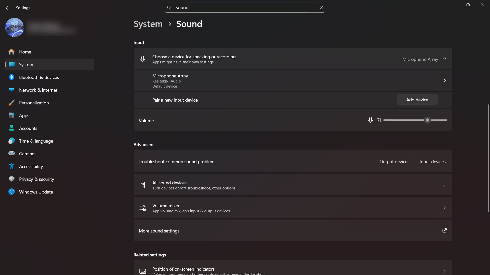

Microphone Not Working
2 Select the correct input.
Open Settings → System → Sound. Under Input, choose the microphone you intend to use and check its input level.

What to check:
- Select the correct device.
- Speak and watch the input meter.
- Raise input volume a little if the meter barely moves.